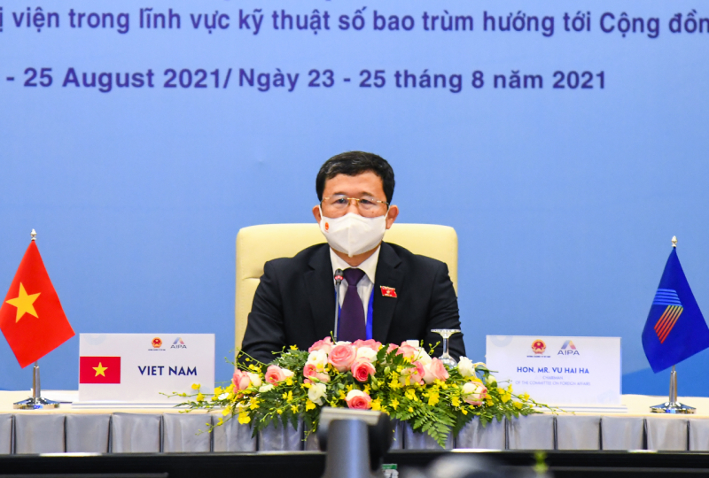
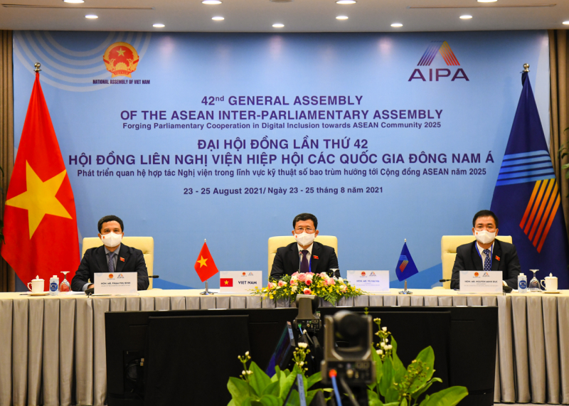

Việt Nam xếp thứ 25/194 về an ninh mạng toàn cầu
Với tinh thần cởi mở, minh bạch, Ủy ban Chính trị đã thảo luận thông qua Báo cáo Hội nghị Nhóm Tư vấn AIPA lần thứ 12; xem xét, cho ý kiến cụ thể về 4 dự thảo Nghị quyết gồm: Tăng cường an ninh mạng và bảo vệ dữ liệu hướng tới một không gian mạng tự cường trong ASEAN (do Brunei Darussalam đề xuất); Thúc đẩy an ninh con người trong lĩnh vực kỹ thuật số bao trùm cho ASEAN (do Malaysia đề xuất); Tăng cường ngoại giao nghị viện hướng tới Cộng đồng ASEAN (do Thái Lan đề xuất); Sự hỗ trợ của nghị viện về tình hình Myanmar (do Indonesia đề xuất).
Thảo luận về dự thảo Nghị quyết "Tăng cường an ninh mạng và bảo vệ dữ liệu hướng tới một không gian mạng tự cường trong ASEAN" do Brunei Darussalam đề xuất, các Đoàn thống nhất cho rằng, kinh tế số sẽ tạo ra không gian mới cho sự phát triển nhanh và bền vững của các nước ASEAN. Đoàn Việt Nam cơ bản ủng hộ nội dung của dự thảo do đây cũng đang là một ưu tiên của Việt Nam trong nỗ lực tăng cường năng lực, tham gia và thúc đẩy cuộc cách mạng công nghiệp lần thứ 4 phục vụ phát triển kinh tế - xã hội. Chia sẻ thêm về chính sách an ninh mạng và bảo vệ dữ liệu của Việt Nam, Đoàn Việt Nam nêu rõ, Quốc hội Việt Nam đã thông qua Luật An ninh mạng (năm 2018), đặt nền móng pháp lý chính thức đầu tiên điều chỉnh các vấn đề trong lĩnh vực an ninh mạng; thông qua Luật An toàn thông tin mạng năm 2015 và ban hành Chiến lược an ninh mạng nhằm cụ thể hóa mục tiêu bảo vệ vững chắc chủ quyền, lợi ích và an ninh quốc gia trên không gian mạng và xây dựng không gian mạng an toàn, lành mạnh. Việt Nam cũng rất coi trọng bảo vệ quyền riêng tư của công dân trên không gian mạng, nhất là trong bối cảnh Việt Nam đang triển khai "Chương trình chuyển đổi số quốc gia đến năm 2025, định hướng đến năm 2030" và xây dựng Chính phủ điện tử.
Về hợp tác quốc tế, Việt Nam có nhiều hoạt động hợp tác quốc tế về an ninh mạng, phòng, chống tội phạm sử dụng công nghệ cao trong ASEAN, hợp tác giữa ASEAN và các đối tác lớn như EU, Mỹ, Nhật Bản, Hàn Quốc, Trung Quốc. Nhờ quyết tâm chính trị và những nỗ lực của Việt Nam, Việt Nam có một hành lang pháp lý về an toàn, an ninh mạng cơ bản đầy đủ. Tại báo cáo xếp hạng an toàn, an ninh mạng toàn cầu năm 2020 do Tổ chức liên minh viễn thông thế giới công bố, Việt Nam xếp thứ 25 trong 194 quốc gia, vùng lãnh thổ được xếp hạng, tăng 25 bậc so với công bố năm 2019 và đứng thứ 7 trong khu vực Châu Á-Thái Bình Dương, đứng thứ 4 trong ASEAN.
Hợp tác nghị viện, chia sẻ kinh nghiệm về an toàn an ninh mạng
Trong 5 trụ cột đánh giá thì có 2 trụ cột được điểm tuyệt đối là pháp lý và hợp tác. Việt Nam cũng đã tham gia và đưa ra một số sáng kiến hợp tác trong ASEAN nhằm thực hiện Kế hoạch tổng thể ASEAN số 2025 như: Thúc đẩy các hành động ưu tiên tăng phục hồi ASEAN; Mở rộng vùng bao phủ của cơ sở hạ tầng băng thông rộng; Tạo thị trường cạnh tranh; Thúc đẩy môi trường số, dịch vụ số kiện cho thương mại; Thúc đẩy xã hội số bao trùm trong ASEAN. Các Đoàn nghị viện thành viên AIPA cũng nhất trí cho rằng, sự phát triển mạnh mẽ của công nghệ đang đặt ra những thách thức mới về bảo đảm an ninh, an toàn trên không gian mạng. An ninh mạng là động lực để các quốc gia tận dụng lợi ích của số hóa với phát triển kinh tế - xã hội; bảo vệ nền dân chủ và quyền con người. Nhấn mạnh tầm quan trọng của hợp tác quốc tế để đối mặt với các thách thức ngày càng tăng của an ninh mạng, các nghị viện thành viên AIPA thống nhất, để phát triển kinh tế số thì Chính phủ các nước phải có các biện pháp để bảo vệ an ninh, an toàn trên không gian mạng; nâng cao nhận thức của người dân về vấn đề này.
AIPA cần tái khẳng định cam kết của các nghị viện thành viên về hợp tác trong bảo đảm an ninh, an toàn mạng, bảo đảm an toàn dữ liệu thông tin trên môi trường mạng; đồng thời , bảo đảm các biện pháp quản lý không xâm hại đến quyền và lợi ích hợp pháp, chính đáng của người dân. Từ thực tiễn của Việt Nam và những yêu cầu, thách thức đặt ra đối với vấn đề bảo đảm an ninh, an toàn trên không gian mạng, Đoàn Việt Nam đề xuất cần tăng cường hợp tác trên kênh nghị viện, chia sẻ kinh nghiệm trong hoàn thiện chính sách, giám sát triển khai chính sách công nghệ và an toàn an ninh mạng; thông tin về các mối đe dọa về an toàn an ninh mạng và các biện pháp kỹ thuật hỗ trợ chống lại đại dịch COVID-19, xây dựng chương trình tuyên truyền chung trong ASEAN và AIPA để nâng cao nhận thức cộng đồng về an toàn an ninh mạng, bảo vệ và hỗ trợ trẻ em tương tác lành mạnh, sáng tạo trên môi trường mạng. Tiếp tục duy trì hợp tác quốc tế, với tinh thần thống nhất nhận thức và hành động của Cộng đồng ASEAN đối với an ninh mạng, tiến tới xây dựng các khuôn khổ pháp lý chung tạo thuận lợi cho phối hợp bảo đảm an ninh mạng.